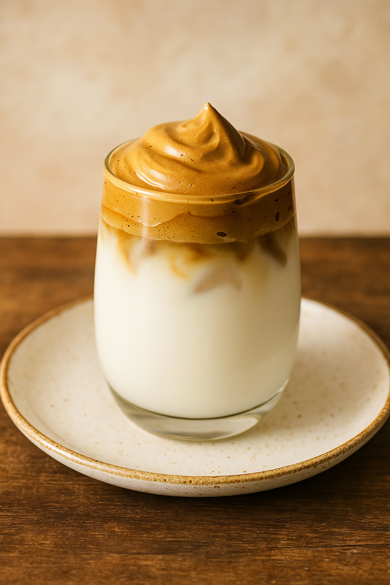

Receta: Café Dalgona
El café Dalgona es una receta coreana que se volvió popular por su textura cremosa y preparación sencilla.
Ingredientes:- 2 cucharadas de café instantáneo
- 2 cucharadas de azúcar
- 2 cucharadas de agua caliente
- Leche fría
Mezcla el café, el azúcar y el agua hasta obtener una espuma espesa. Sirve en un vaso con leche fría y coloca la mezcla encima.
